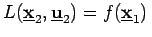

Dualität in der Optimierung
- 1. Duales Problem:
- Zu (18.31a,b) wird unter Verwendung der LAGRANGE-Funktion (18.37) das folgende duale Problem gebildet:
 |
= |
|
(18.41a) |
| M* |
= |
|
(18.41b) |
- 2. Dualitätsaussagen:
- Sind und , dann gilt
-
-
Ist
, dann ist
Minimalpunkt von (
18.31a,b) und
Maximalpunkt von (
18.41a,b).